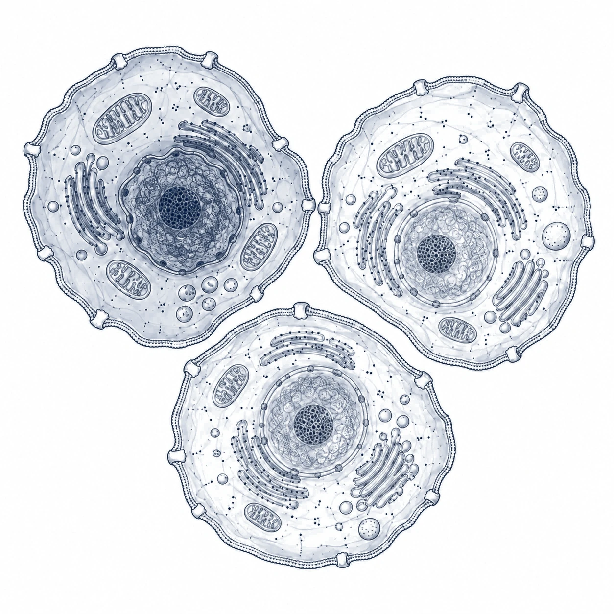
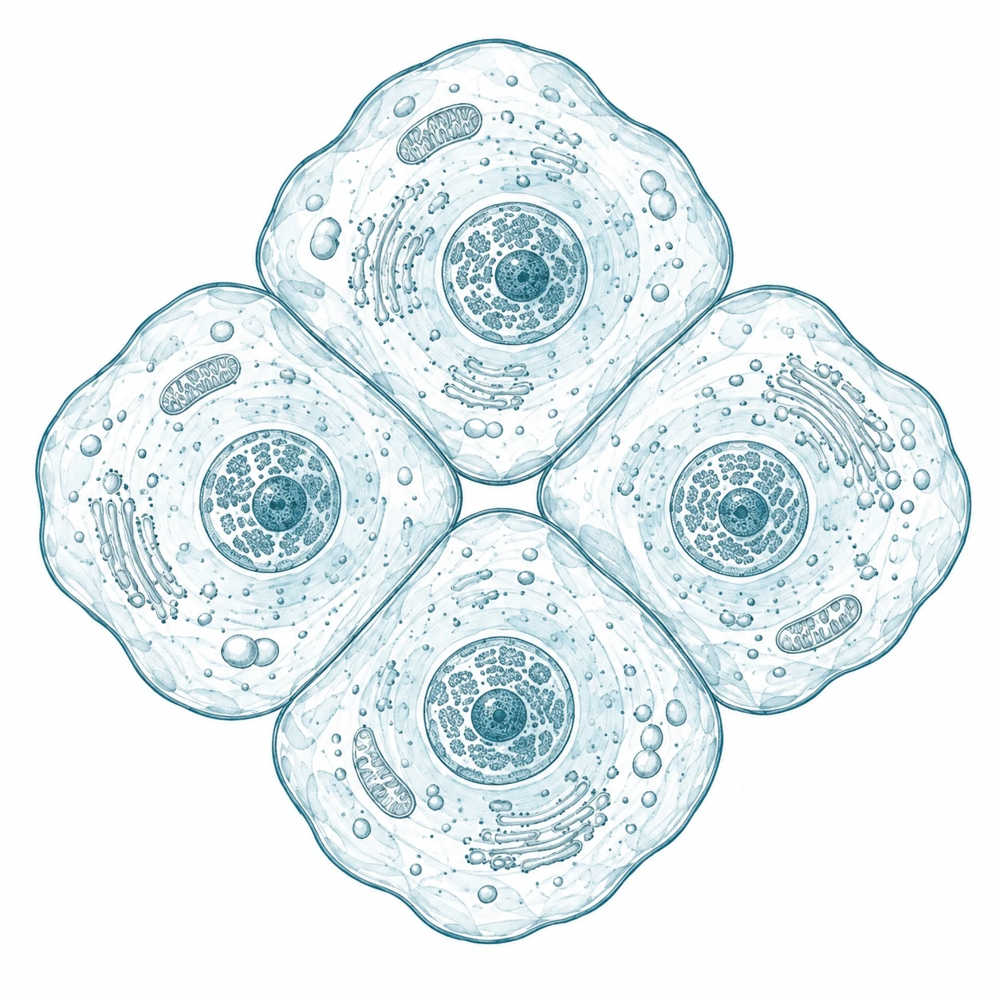
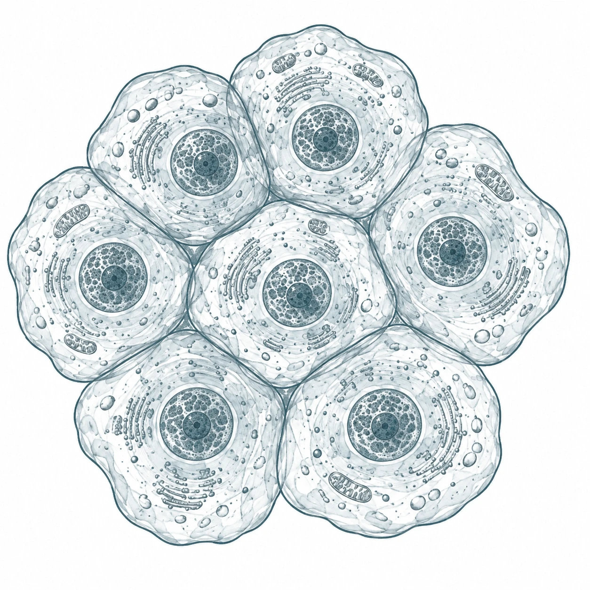
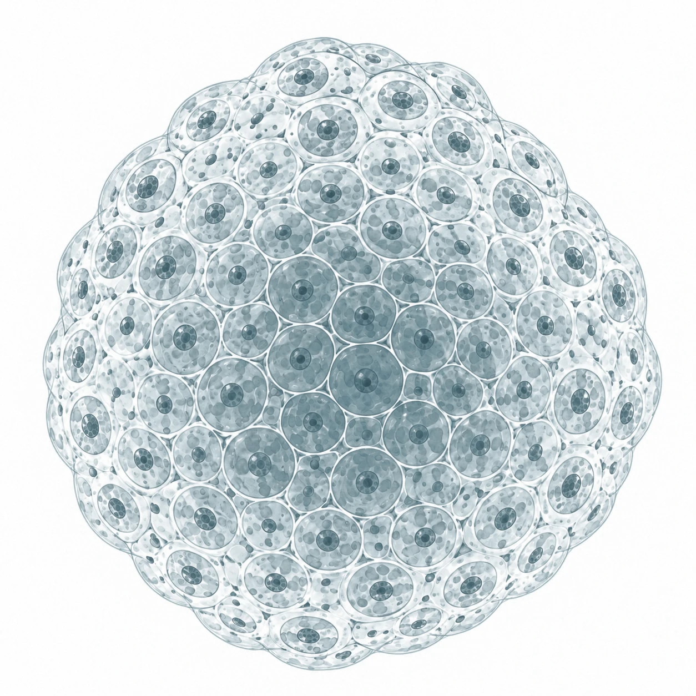
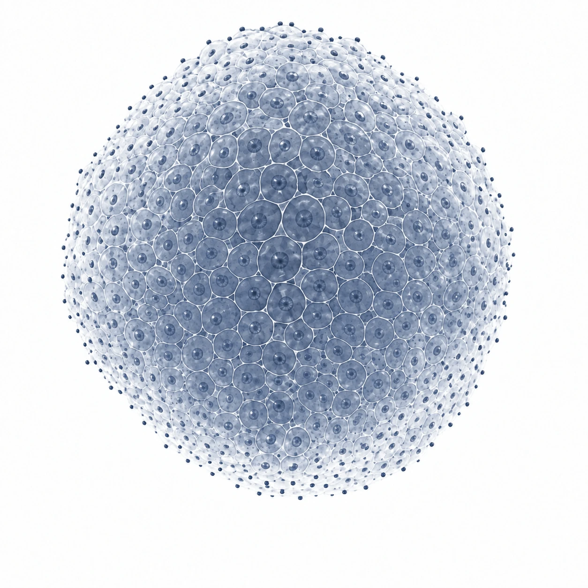
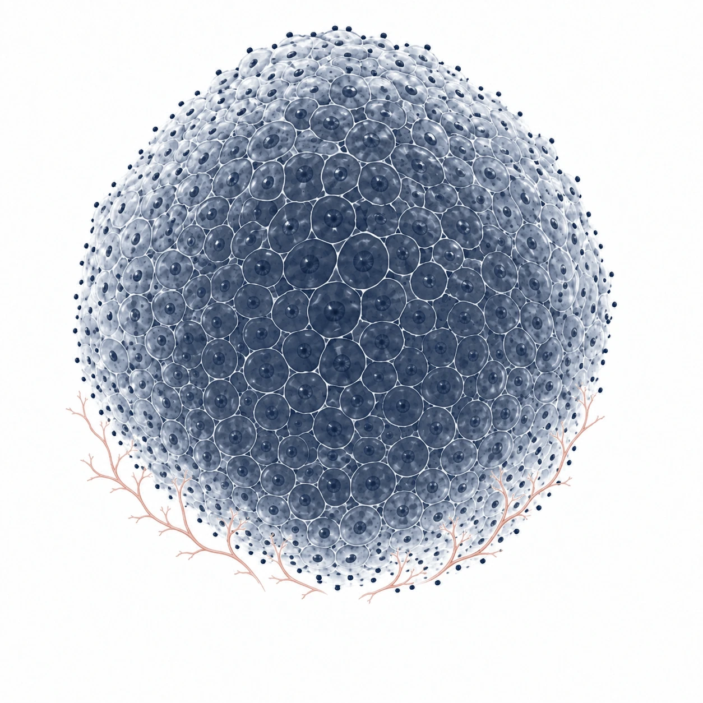
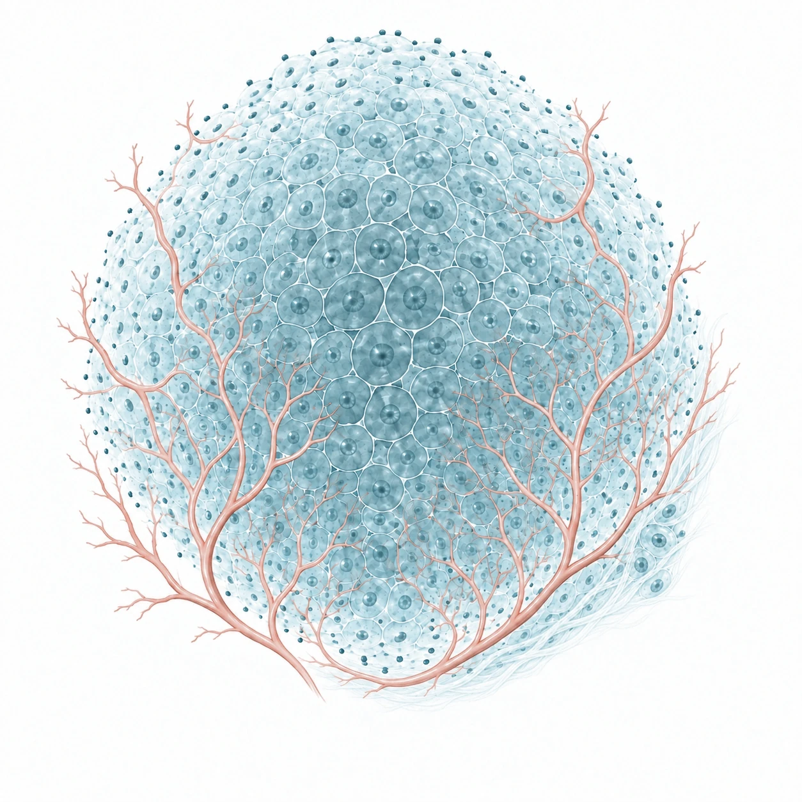
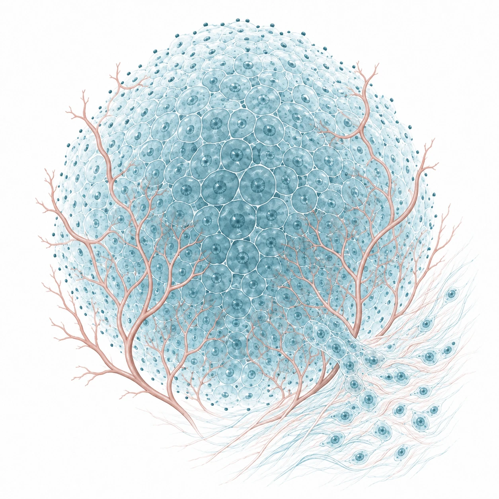
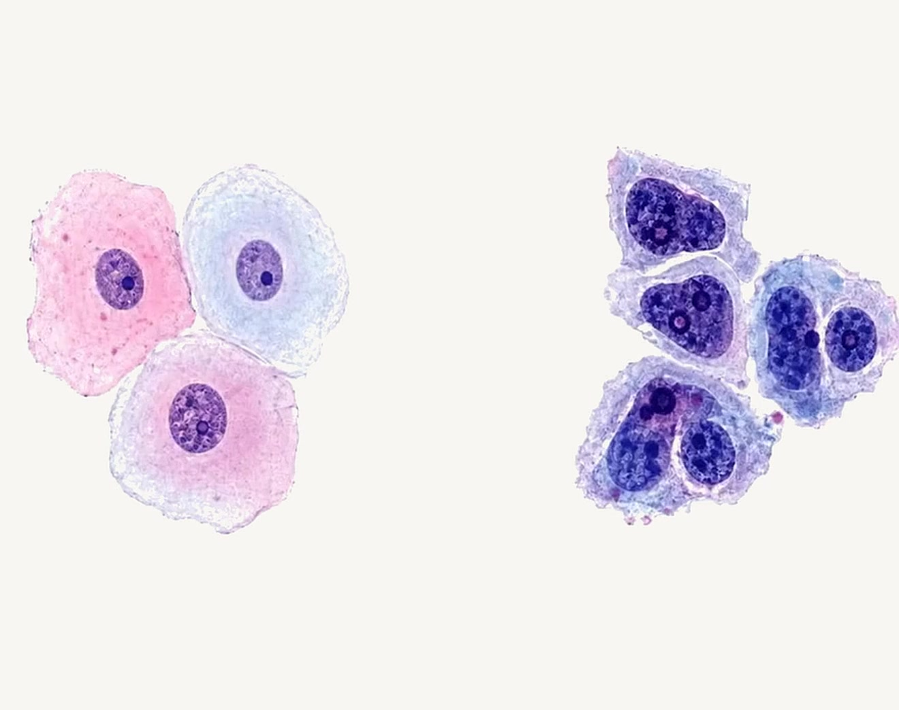
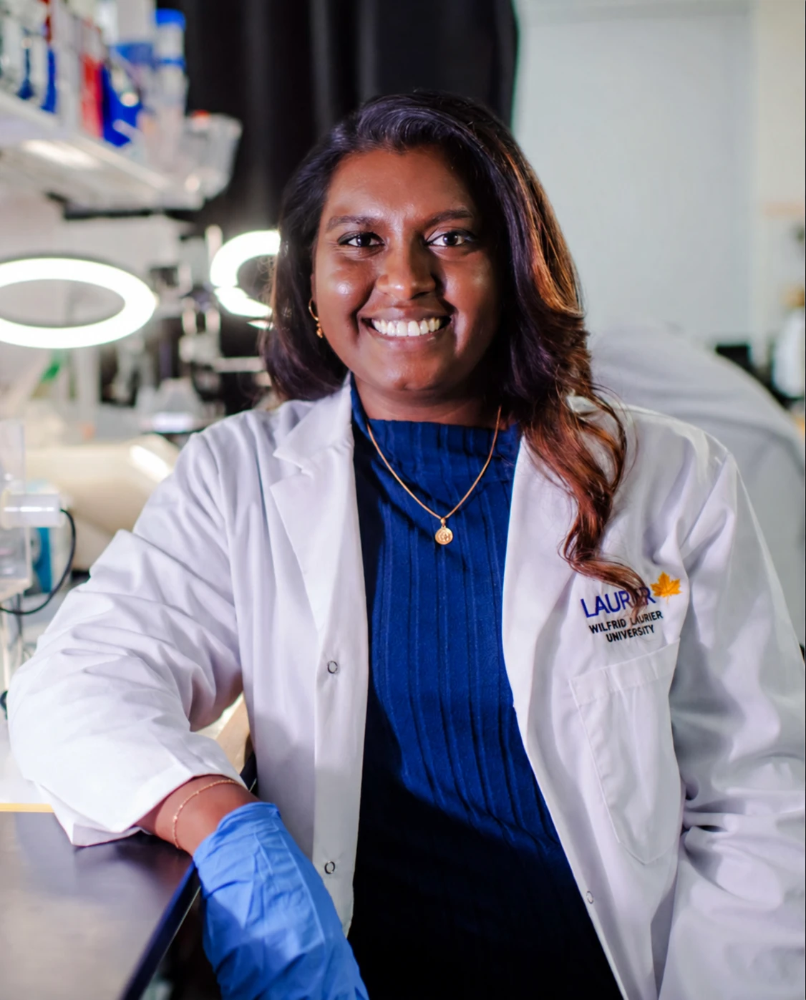

01 · Hardware
QSense™

A photon-counting sensor designed to record the faint light living tissue gives off on its own, in darkness, with no dye and no added radiation.
Research prototype
Ultra-early cancer detection
No needle. No dye. No added radiation.
Every 60 seconds, the U.S. loses one person to cancer. Not because treatments fail, but because they start too late.
5-year survival when caught early
5-year survival when caught late
GROWTH 01 / 9
The story begins with a few normal cells.
Scroll to watch it grow
The story begins with a few normal cells.

A single cell acquires a driver mutation: a DNA change that can give it a growth advantage.

Now we follow the altered cell’s descendants as they inherit the change and divide.

Repeated divisions build a larger cluster of related cells.

The growing cluster becomes more crowded and disorganized.

As the mass grows, oxygen can become scarce inside. Cells can send signals that encourage new blood vessels to grow.

New blood vessels grow around the mass, supplying oxygen and nutrients that support further growth.

With further changes, cells can become cancerous and grow into nearby tissue.

Roughly 1 billion cells.By then, it's been growing silently for years.
But there's a signal before there's a tumor.
Cells emit very faint light during metabolism. In laboratory and animal studies, cancer and comparison cells showed differences in their light emissions. HelioFlux is investigating whether those differences could support earlier cancer detection.
Dr. Nirosha J. Murugan spent a decade building the technology that reads these signals.

We've built research prototypes and published the early findings in peer-reviewed journals. Now we're developing the clinical version.
A patient sits in a dark room for about 15 minutes.
A sensor reads the faint light coming off their body.
AI analyzes the signal.
Same visit, same day.
A photon-counting sensor designed to record the faint light living tissue gives off on its own, in darkness, with no dye and no added radiation.
Research prototype

Software built on a decade of cell and animal data, designed to read the color and timing of the signal, not only its brightness. Human cancer performance has not yet been established.
In development
Dr. Nirosha Murugan’s published work spans cell cultures, a mouse melanoma model, and exploratory measurements in healthy adults. Each study addresses a different level of evidence.
Featured In
Partner Program
The proposed first study in people with cancer would compare QSense measurements with biopsy results from the same participants. Those human cancer data do not exist yet. Generating them is the purpose of the study.
Record the tissue’s photon signal.
Match the measurement to the clinical result.
Test whether the signal adds clinically useful information.
IRB study in development
HelioFlux is preparing an IRB study for breast cancer detection with Dr. Tom Lomis, a world-renowned cancer oncologist and surgeon, to evaluate how ultra-weak photon emissions may support earlier, non-invasive detection.
Human study in preparation
First human study targeting Q4 2026 with a Beverly Hills dermatology partner.
Published · 2025 · iScience
In 20 healthy adults, faint light recorded near the head was studied alongside EEG. It was an exploratory study of brain activity, not cancer detection.

Interim CEO, Chief Scientist & Co-Founder
She earned her Ph.D. in Biomolecular Sciences at Laurentian University, Canada, where she pioneered the quantum-sensor-based cancer detection technology now commercialized through HelioFlux. As a postdoctoral researcher in Dr. Michael Levin's lab at the Allen Discovery Center at Tufts University, she advanced ion-channel bioelectricity as a mechanism of tissue patterning and co-developed a drug delivery system to induce limb regeneration in non-regenerative animals.
Meet the full team"These sensors were inspired by technology built to detect faint light from distant stars. We pointed them at the faint light coming off the human body, and built an AI that uses it to read the state of your cells and tell healthy tissue from cancer."
Ten years of published research in cells, animals and exploratory human measurements. We're raising a pre-pilot round for our first IRB-approved study in people with cancer.